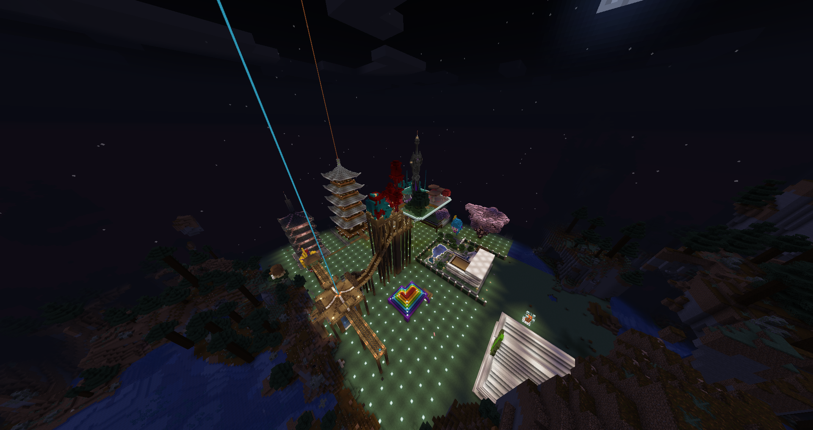
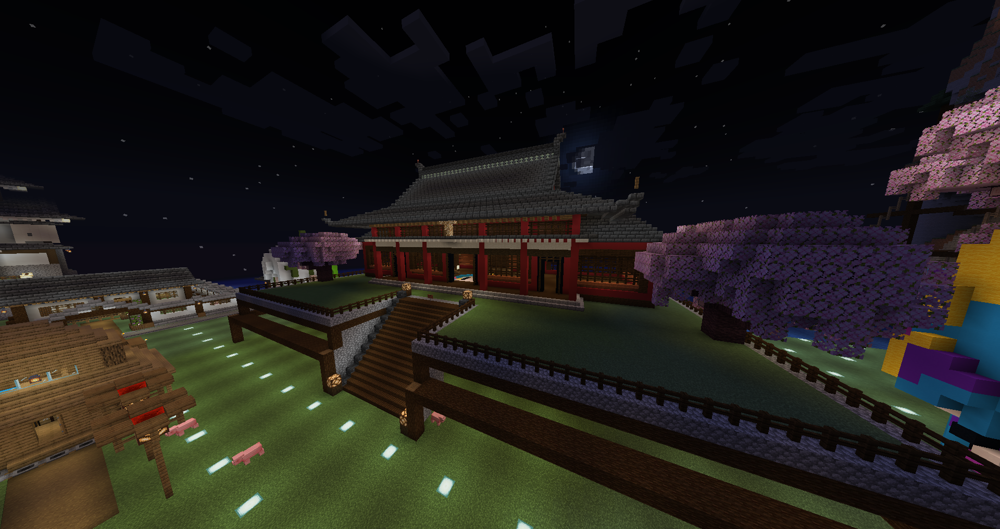
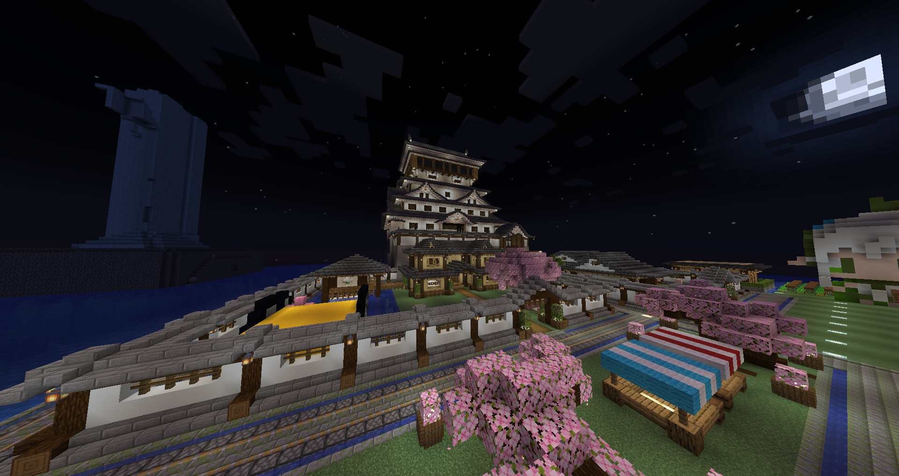

24hr開服 Java、基岩雙版本同步
受夠了無聊的伺服器？對充斥著課金和不公平的環境感到厭倦？厭倦了那些非常ㄎㄅ的服主？
來試試「水伊布伺服器」吧！這裡給你嶄新的遊戲體驗！
在這裡，我們打破常規，打造一個充滿活力和友善的遊戲環境。不會有無止境的課金，也不會有不公平的對待。我們尊重每一位玩家，致力於打造最好的遊戲體驗。
無論你是初學者還是老手，無論你喜歡建造、冒險還是社交，「水伊布伺服器」都能滿足你的需求。
我們提供多樣的遊戲模式和活動，讓你可以盡情探索、創造和享受遊戲的樂趣。
趕快加入我們的大家庭，和志同道合的夥伴一起，一起創造屬於我們的精彩世界吧！
Java 版伺服器資訊
IP地址: d813b23.icehost.xyz
版本: 1.20.1~1.20.6
基岩版伺服器資訊
IP地址: bedrock.icehost.xyz
端口: 10007
版本: 1.20以上
掛機見面
前往掛機見面頁面聯絡我們


